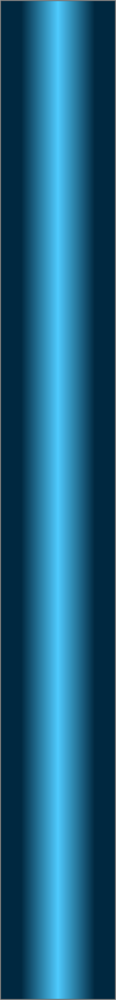
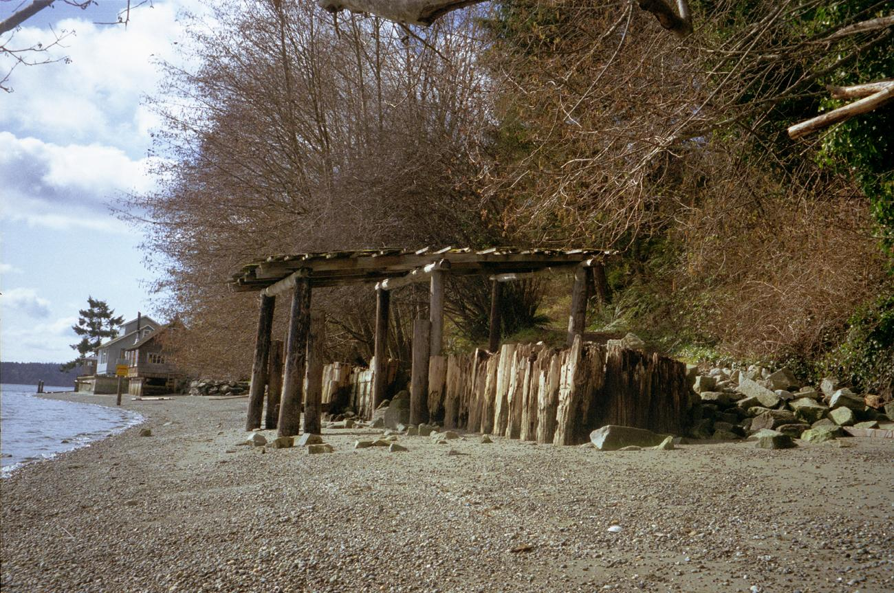
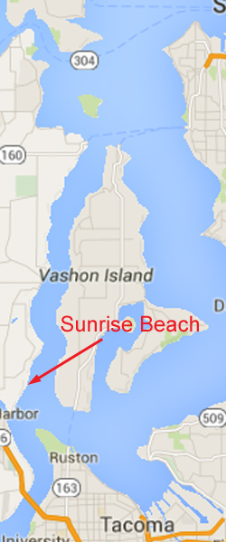
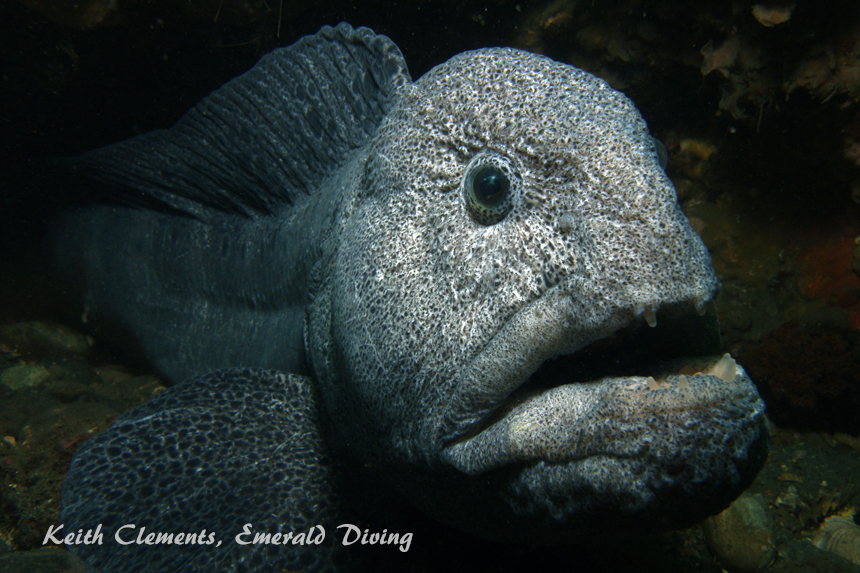
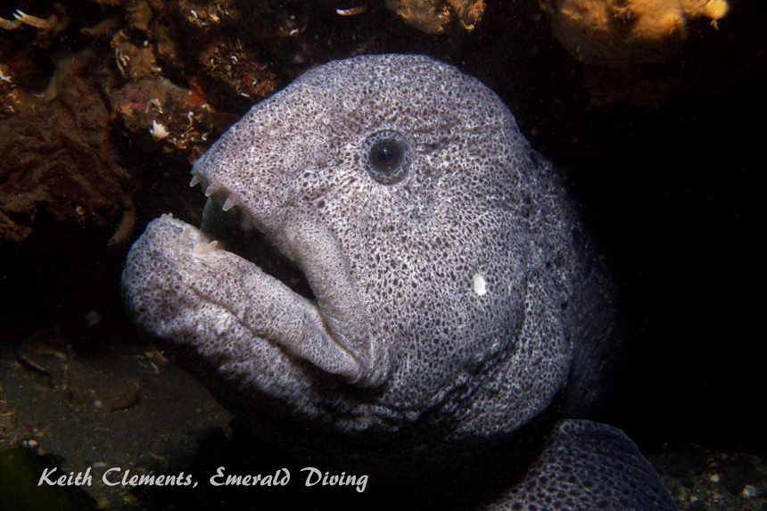
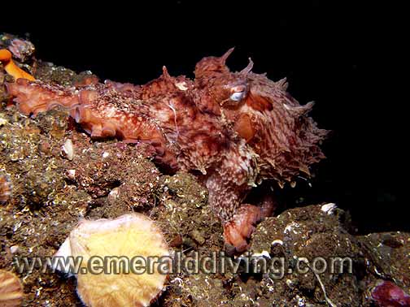
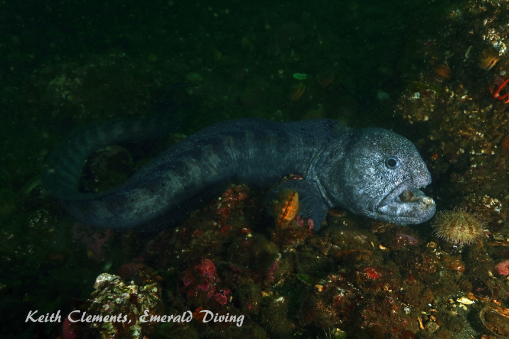

<!doctype html>
<html>
<head>
<meta charset="utf-8">
<title>Sunrise Beach</title>
<meta name="generator" content="WYSIWYG Web Builder - http://www.wysiwygwebbuilder.com">
<link href="Emerald_Diving.css" rel="stylesheet">
<link href="sunrise_beach_frame.css" rel="stylesheet">
<script>
function onChangeGoMenu2(){var a=document.getElementById('GoMenu2-select'),b=a.options[a.selectedIndex].value,c=a.options[a.selectedIndex].className;a.selectedIndex=0;a.blur();b&&(NewWin=window.open(b,c),window.NewWin.focus())};
</script>
</head>
<body>
<script>
var gaJsHost = (("https:" == document.location.protocol) ? "https://ssl." : "http://www.");
document.write(unescape("%3Cscript src='" + gaJsHost + "google-analytics.com/ga.js' type='text/javascript'%3E%3C/script%3E"));
</script>
<script>
try {
var pageTracker = _gat._getTracker("UA-15987748-1");
pageTracker._trackPageview();
} catch(err) {}</script>

<div id="container">
<div id="wb_Shape1431" style="position:absolute;left:670px;top:655px;width:378px;height:3241px;z-index:3;">
</div>
<div id="wb_MasterPage1" style="position:absolute;left:0px;top:1px;width:1047px;height:62px;z-index:4;">
<div id="wb_Shape1" style="position:absolute;left:0px;top:5px;width:1047px;height:57px;z-index:0;">
</div>
<div id="wb_Text2" style="position:absolute;left:20px;top:5px;width:169px;height:16px;z-index:1;">
<span style="color:#FFFFFF;font-family:Arial;font-size:13px;"><em><a href="./local_sites_ps.html">Return to Puget Sound Map</a></em></span></div>
<div id="wb_GoMenu2" style="position:absolute;left:800px;top:5px;width:225px;height:25px;z-index:2;">
<form id="GoMenu2" role="menu">
<select id="GoMenu2-select" name="GoMenu2" onchange="onChangeGoMenu2()">
<option class="_self" value="#" selected>Select a Dive Site</option>
<option class="_self" value="./alki_reef_frame.html" role="menuitem">Alki Reef</option>
<option class="_self" value="./blakely_harbor_frame.html" role="menuitem">Blakely Harbor Reef</option>
<option class="_self" value="./blakely_rock_reef_frame.html" role="menuitem">Blakely Rock Reef</option>
<option class="_self" value="./blakely_rock_wall_frame.html" role="menuitem">Blakely Rock Wall</option>
<option class="_self" value="./dabob_frame.html" role="menuitem">Dabab Seamount</option>
<option class="_self" value="./dalco_wall_frame.html" role="menuitem">Dalco Wall</option>
<option class="_self" value="./day_island_frame.html" role="menuitem">Day Island Wall</option>
<option class="_self" value="./edmonds_up_frame.html" role="menuitem">Edmonds UW Park</option>
<option class="_self" value="./flagpole_point_frame.html" role="menuitem">Flagpole Point</option>
<option class="_self" value="./four_mile_barges_frame.html" role="menuitem">Four Mile Barges</option>
<option class="_self" value="./gedney_bar_frame.html" role="menuitem">Gedney Bar</option>
<option class="_self" value="./gedney_barges_frame.html" role="menuitem">Gedney Barges</option>
<option class="_self" value="./gedney_reef_frame.html" role="menuitem">Gedney Reef</option>
<option class="_self" value="./kvi_tower_frame.html" role="menuitem">KVI Tower</option>
<option class="_self" value="./point_def_n_frame.html" role="menuitem">Point Defiance N Wall</option>
<option class="_self" value="./possession_fingers_frame.html" role="menuitem">Possession Fingers</option>
<option class="_self" value="./pulali_wall_frame.html" role="menuitem">Pulali Wall</option>
<option class="_self" value="./shilshole_wrecks.html" role="menuitem">Shilshole Wrecks</option>
<option class="_self" value="./sunrise_beach_frame.html" role="menuitem">Sunrise Beach</option>
<option class="_self" value="./three_tree_frame.html" role="menuitem">ThreeTree Point</option>
<option class="_self" value="./waterman_frame.html" role="menuitem">Waterman Wall</option>
</select>
</form>
</div>
</div>
<div id="wb_Text143" style="position:absolute;left:7px;top:1227px;width:477px;height:2px;z-index:5;">
&nbsp;</div>
<div id="wb_Image2" style="position:absolute;left:0px;top:58px;width:794px;height:594px;z-index:6;">
</div>
<div id="wb_Text3" style="position:absolute;left:22px;top:68px;width:527px;height:55px;z-index:7;">
<span style="color:#009300;font-family:Arial;font-size:48px;">Sunrise Beach</span></div>
<div id="wb_Text4" style="position:absolute;left:0px;top:671px;width:555px;height:2px;z-index:8;">
&nbsp;</div>
<div id="wb_Text5" style="position:absolute;left:0px;top:655px;width:657px;height:3225px;z-index:9;">
<span style="color:#FFFFFF;font-family:Arial;font-size:15px;"><strong>Topography: </strong>Gently sloping sandy shelf which gives way to a rocky reef in about 25-30 feet of water. The reef is situated around a wall that stands 10-25 feet tall and spans about 75 yards. Boulders and other rock formations cascade down from the wall to around 100 feet. <br><br><strong>Puget Sound marine life rating: </strong>5<strong><br></strong><br><strong>Puget Sound structure rating: </strong>4<br><br><strong>Diving depth: </strong>60-90 feet<br><br><strong>Highlight: </strong>Giant Pacific octopus and diver-friendly resident wolfeels.<br><br><strong>Skill level: </strong>Intermediate. Physical considerations if diving by shore.<br> <br><strong>GPS coordinates: </strong>N47° 20.874&nbsp; W122° 33.367 (Coordinates taken near shore by the two pilings). <br><br><strong>Access by boat: </strong>The Sunrise Beach reef is located in Colvos Passage, just north of Gig Harbor. If you are diving this site by boat, please make certain to not anchor directly on the reef to avoid damaging the prolific invertebrate life that makes this site special. As of January 2016, there are two dive site marker buoys at this site - one at either end of the reef (donated by Oregon scuba).&nbsp; <br><strong><br>Shore access: </strong>Getting here by car requires winding through a number of back roads. Here is how I get to Sunrise Beach Park from Seattle. Drive time is approximately 60 minutes if traffic is good. Good traffic in Seattle and Tacoma?&nbsp; Yeah, right. <br><br>From I-5 south, take Highway 16 across the Tacoma Narrows Bridge<br>&nbsp; <br>Take the Gig Harbor &quot;City Center&quot; exit.<br><br>Go straight onto Stingon Ave. at the stop light at the end of the off ramp.<br><br>Follow Stingon Ave. down the hill and go straight at the first stop sign. Continue down the hill.<br><br>At the base of the hill is a second stop sign. Turn left at the second stop sign onto Harborview Dr. and follow&nbsp;&nbsp; &nbsp;&nbsp; &nbsp;&nbsp;&nbsp;&nbsp; the road around the harbor.<br><br>At the next stop sign, continue to follow the road around the harbor to the right by following N. Harborview Dr. <br><br>The road soon comes to a &quot;T&quot;. Turn right on to Vernhardson St.<br><br>Follow Vernhardson St. a short distance to Crescent Valley Drive NW and turn left.<br><br>Turn right by the fire station onto Drummond Dr. NW, and follow it up the hill. <br> <br>At the top of the hill, the road &quot;T&quot;s again. Turn right onto Moller Drive.<br> <br>Turn left onto Sunrise Beach Drive and follow the windy narrow road downhill. Be careful as there is only enough room for one&nbsp;&nbsp;&nbsp; car on parts of this narrow road and several blind corners. The park entrance is on the left. <br><em><br></em><strong>Dive profile:</strong> When I was shore diving alot, this was my favorite Puget Sound dive.&nbsp; The main wall is approximately 75 yards in length and runs parallel to shore. It starts in about 30 feet of water and drops to about 60 feet, but large boulders and smaller rock formations cascade downslope to depths of about 105 feet. Most of the excitement is in the top 60 feet of water. <br><br>I locate the reef from the surface by finding the two lone pilings along the shore just past the small grouping of three houses south of the park. From here, I descend and swim on a compass bearing of 115º. This puts me on the northern section of the wall. I head south at a depth of about 45-50 feet if I get to 50 feet and have not encountered the wall. <br><br>The wall and surrounding reef are rugged and composed of hard rock. The wall is blemished with numerous fissures, holes, cracks, and crevices. The base of the wall is littered with boulders and rocks that have crumbled off over the ages. I sometimes venture as deep as 105 feet where the last of the rocks fade into the sandy substrate. Although I occasionally find a solitary wolfeel or octopus at deeper depths, the structure above 60 feet is by far the better producer of wolfeel and giant Pacific octopus encounters.<br><br>When my air supply or no-deco time begins to run low, I head to the north end of the reef and gradually follow the shelf upslope towards the public beach. I take time to explore the interesting sandstone ledges along the shelf. The kelp grows wild on top of the shelf from spring through late fall, providing excellent cover for all sorts of creatures.<br><br><strong>My preferred gas mix: </strong>EAN 35<br><br><strong>Current observations: </strong><br><br><em>Current Station: </em>Tacoma Narrows, north end<br><br><em>Slack Before Flood Correction</em>: Double slack, -90 minutes (current changes from north to south) and at predicted slack (current changes from south to north). <br><br><em>Slack Before Ebb Correction: </em>-90 minutes (current slows downs and may stop, but flows north on both the flood and ebb)<br><br>Sunrise Beach is a very current intensive site. The current can dictate whether a dive will be a stellar experience or an absolute nightmare. I only dive here when the maximum current at the Tacoma Narrow is 2.2 knots or less on both sides of the exchange. My observation is slack before ebb is more predictable and consistent than slack before flood. The current after slack before ebb heads north from the reef to the public beach access - a big benefit when shore diving. Another shore diving option is to start a dive between the double slack before flood. This strategy allows me to ride the southbound current after the first slack from the public beach to the dive site. While on the wall, the second slack occurs.&nbsp; I then ride the northbound current after the second slack from the reef back to the public beach. Although this double slack is fairly consistent on minor exchanges, I have noted times when it doesn’t happen at all.<br><br>My preference is to dive this site on slack before ebb and be in the water two hours before predicted slack at the Tacoma Narrows. I have aborted a dive at this site on more than one occasion due to strong and unpredictable current.<br><br>Conversely, I have done back to back dives here off-slack on mild ebbs (1.6 knots or less at the Tacoma Narrows.&nbsp; On the second dive, which was 90 minutes after slack, the current was very weak and headed south along the reef.<br><br><strong>Park facilities: </strong>Sunrise Beach Park offers simple but appreciated facilities. The park provides dirt parking for about a dozen cars, a porta-potty, garbage can, picnic table, and the public beach access. The park's gate is closed and locked from dusk to dawn. Don’t get yourself locked in at night! The park is maintained by an on-premises caretaker living in the house in the park. <br><br>A dirt path leads down the grassy hill to the public beach access. The path turns to crushed rock for the last 30 yards. The steep path is over 100 yards long and slippery when wet, especially when carrying 80-100 pounds of scuba gear. The drop from the path to the beach is down a series of rocks that can be a bit tricky to negotiate when in full scuba garb.<br><br>The public beach is not overly expansive. The southern border of the public beach is clearly marked with a large sign warning scuba divers to enter the water before passing the sign. The reef is approximately 75 yards south of this sign. You are technically trespassing if you walk past this sign down the beach, or even walk in the water along the beach. Please respect the property rights of others and swim to the reef. Or, better yet, come here by boat.<br><br><strong>Boat Launch:</strong><br><br>Point Defiance boat ramp (Rustin, Tacoma). Approximately 4 miles from the dive site.<br><br>Redondo Beach boat ramp:&nbsp; Approximately 11 miles from this dive site.<br><br><strong>Facilities: </strong>None<strong><br><br>Hazards:</strong> <br><br>Current: Strong current off-slack. Potentially unpredictable current at slack, especially during moderate to heavy exchanges.<br><br>Fishing boats: Salmon boats sometimes troll through this area. This reef is a voluntary restricted zone for bottom fishing.<br><br>Boat traffic: This is a favorite dive site of many Puget Sound dive charter boats. A dive charter (which will remain nameless) almost dropped an anchor on me during one dive.<br><br>Demanding hike when shore diving: The hike from the parking lot to the public beach is over 100 yards long and steep. Getting to the public beach is difficult and demanding, especially when he ground is wet. However, the trip downhill is nothing compared to the hike uphill after a dive. I know many people that refuse to shore dive this site because of the hike.<br><br>Long surface swim when shore diving: The Surface swim from the public beach to the dive site is long and can involve negotiating current. <br><em><br></em><strong>Marine life: </strong>This is my favorite shore dive in Washington. Most divers come here for one reason - to see wolfeels. I have been able to find at least one wolfeel on all but two of the +50 dives I have done at Sunrise Beach. Wolfeels have established dens at the north and south ends of the wall. One of the best places to find wolfeels is at the top of the large indentation just south of the wall’s midpoint. A diver friendly male wolfeel usually occupies a den at the top of the wall (sometimes with a mate), and occasionally comes out to greet an approaching diver. Another male wolfeel has occupied the same den under a large boulder in 50 feet of water towards the south end of the reef since 2000. <br><br>Some divers elect to feed wolfeels. I do not encourage this behavior and ask those that do to only offer foods that are natural to the wolfeel’s diet (i.e. no hot dogs or other “people” food). When presenting food, the wolfeel will let you know very quickly if it is interested in your offering or not. If not, please do not force-feed these gentle fish. I have seen a wolfeel abandon its den to get away from divers that are forcefully cramming urchins in its face. Also keep in mind that wolfeels have sharp teeth and powerful jaws that are capable of delivering a nasty bite.<br><br>A few of the Sunrise wolfeels are so friendly that they will approach and even gently wrap themselves around a diver. If you are lucky enough to enjoy such an encounter, I encourage you to never grasp or restrict the animal in any way. Such encounters must be entirely on the wolfeel’s terms. <br><br>Giant Pacific octopus abound on the wall and surrounding reef. Sometime they are buried deep in dens and very hard to find. On rare occasions I find octopus hunting the reef or shelf above the reef. The largest giant Pacific octopus I have seen lived here for several years - it had an arm span of 16 feet. It has long since brooded young and died. <br><br>This reef is host to an amazing array of fish and invertebrates. Fish populations include ratfish, red Irish lords, buffalo scuplins, copper and quillback rockfish, and schools of perch. If you are a careful observer, you stand a good chance of noting a mosshead or decorated warbonnet. At times, the number of great sculpins at this site is amazing - I have had dives where I have noted over 50 large great sculpins on this reef.<br><br>Invertebrates species are too numerous to list, but include swimming scallops, San Diego dorids, white lined dironas, beefy orange spotted nudibranchs, and some and an extensive line-up of seastars - cushion, sun, sunflower, morning, pink short spined, vermilion, and ochre stars just to name a few. However, it is often scallops and green sea urchins that dominate the substrate.&nbsp; The scallops are often encrusted with beautiful purple or orange smooth sponges.<br><br>The shelf above the wall is an excellent area to find pink nudibranchs, moon snails, rock sole, and red rock crabs during late spring, summer, and early fall.<br><br><br><br></span></div>
<div id="wb_Image1" style="position:absolute;left:797px;top:58px;width:244px;height:594px;z-index:10;">
</div>
<div id="wb_Image3" style="position:absolute;left:680px;top:681px;width:352px;height:262px;z-index:11;">
</div>
<div id="wb_Image4" style="position:absolute;left:680px;top:928px;width:352px;height:262px;z-index:12;">
</div>
<div id="wb_Image5" style="position:absolute;left:680px;top:1173px;width:352px;height:262px;z-index:13;">
</div>
<div id="wb_Image6" style="position:absolute;left:680px;top:1423px;width:352px;height:262px;z-index:14;">
</div>
<div id="wb_Image7" style="position:absolute;left:680px;top:1669px;width:352px;height:262px;z-index:15;">
</div>
<div id="wb_Text6" style="position:absolute;left:701px;top:693px;width:164px;height:16px;z-index:16;">
<span style="color:#FFFFFF;font-family:Arial;font-size:13px;"><em>Wolf Eel (male)</em></span></div>
<div id="wb_Text8" style="position:absolute;left:855px;top:1179px;width:172px;height:16px;text-align:right;z-index:17;">
<span style="color:#FFFFFF;font-family:Arial;font-size:13px;"><em>Red Irish Lord</em></span></div>
<div id="wb_Text9" style="position:absolute;left:701px;top:1435px;width:139px;height:16px;z-index:18;">
<span style="color:#FFFFFF;font-family:Arial;font-size:13px;"><em>Grunt Sculpin</em></span></div>
<div id="wb_Text10" style="position:absolute;left:687px;top:1682px;width:153px;height:16px;z-index:19;">
<span style="color:#FFFFFF;font-family:Arial;font-size:13px;"><em>Mosshead Warbonnet</em></span></div>
<div id="wb_Text12" style="position:absolute;left:692px;top:661px;width:357px;height:15px;text-align:center;z-index:20;">
<span style="color:#FFFFFF;font-family:Arial;font-size:12px;"><em>Underwater imagery from this site</em></span></div>
<div id="wb_Image8" style="position:absolute;left:680px;top:1934px;width:352px;height:234px;z-index:21;">
</div>
<div id="wb_Image9" style="position:absolute;left:680px;top:2163px;width:352px;height:262px;z-index:22;">
</div>
<div id="wb_Text11" style="position:absolute;left:693px;top:1938px;width:153px;height:16px;z-index:23;">
<span style="color:#FFFFFF;font-family:Arial;font-size:13px;"><em>Swimming Scallop</em></span></div>
<div id="wb_Text13" style="position:absolute;left:693px;top:2176px;width:153px;height:16px;z-index:24;">
<span style="color:#FFFFFF;font-family:Arial;font-size:13px;"><em>Wolf Eel (male)</em></span></div>
<div id="wb_Image10" style="position:absolute;left:680px;top:2410px;width:352px;height:262px;z-index:25;">
</div>
<div id="wb_Text14" style="position:absolute;left:691px;top:2418px;width:153px;height:32px;text-align:right;z-index:26;">
<span style="color:#FFFFFF;font-family:Arial;font-size:13px;"><em>Pacific Spiny Lumpsucker</em></span></div>
<div id="wb_Image11" style="position:absolute;left:680px;top:2674px;width:352px;height:262px;z-index:27;">
</div>
<div id="wb_Image12" style="position:absolute;left:680px;top:2939px;width:352px;height:232px;z-index:28;">
</div>
<div id="wb_Text1" style="position:absolute;left:863px;top:933px;width:164px;height:16px;text-align:right;z-index:29;">
<span style="color:#FFFFFF;font-family:Arial;font-size:13px;"><em>Giant Pacific Octopus</em></span></div>
<div id="wb_Text15" style="position:absolute;left:865px;top:2951px;width:164px;height:16px;text-align:right;z-index:30;">
<span style="color:#FFFFFF;font-family:Arial;font-size:13px;"><em>Sparkling Shrimp</em></span></div>
<div id="wb_Text254" style="position:absolute;left:865px;top:2687px;width:164px;height:16px;text-align:right;z-index:31;">
<span style="color:#FFFFFF;font-family:Arial;font-size:13px;"><em>Giant Pacific Octopus</em></span></div>
<div id="wb_Image13" style="position:absolute;left:680px;top:3174px;width:352px;height:232px;z-index:32;">
</div>
<div id="wb_Image14" style="position:absolute;left:680px;top:3409px;width:352px;height:232px;z-index:33;">
</div>
<div id="wb_Text232" style="position:absolute;left:865px;top:3183px;width:164px;height:16px;text-align:right;z-index:34;">
<span style="color:#FFFFFF;font-family:Arial;font-size:13px;"><em>Giant Pacific Octopus</em></span></div>
<div id="wb_Text16" style="position:absolute;left:684px;top:3420px;width:64px;height:16px;text-align:right;z-index:35;">
<span style="color:#FFFFFF;font-family:Arial;font-size:13px;"><em>Wolf Eel</em></span></div>
<div id="wb_Image15" style="position:absolute;left:680px;top:3644px;width:352px;height:232px;z-index:36;">
</div>
<div id="wb_Text17" style="position:absolute;left:837px;top:3857px;width:193px;height:16px;text-align:right;z-index:37;">
<span style="color:#FFFFFF;font-family:Arial;font-size:13px;"><em>Orange Spotted Nudibranch</em></span></div>
<div id="wb_Text2" style="position:absolute;left:2px;top:3907px;width:1041px;height:36px;z-index:38;">
<span style="color:#009300;font-family:Arial;font-size:32px;">Composite Photography From Sunrise Beach</span></div>
<div id="wb_Image16" style="position:absolute;left:4px;top:3959px;width:654px;height:860px;z-index:39;">
</div>
</div>
</body>
</html>